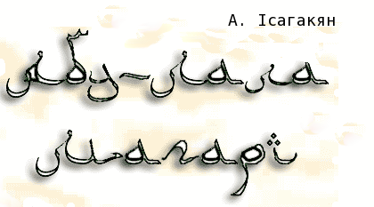

СУРА ДРУГА
Все далі і далі йшов караван
повз пальм шелестких нескінченний стрій;
Здіймався пилюки чорний туман
і дихав вогнем вітрець-суховій.
"Простуй, караване. Що кинули ми,
щоб здатне було душу мрією гріть?"-
Таку вів розмову з серцем своїм
великий поет Абу Магарі.
"Покинули жінку кращу богинь?
щасливу любов?
жадань океан?
Простуй, не спиняйсь! Покинули лиш
кайдани й замки,
химери й обман.
Tай що воно - жінка? Хижий павук...
підступна та заздрісна, зла,
лиха;
Цілунком видурює в тебе хліб
і в ліжко твоє з іншим ляга.
Ти в човні хисткім довірся штормам,
ніж жінки щонайчеснішим словам.
Дешева торгівка масних розпуст,
Ібліс Ібліс —
одне з мусульманських найменувань диявола.
промовля з її звабних вуст.
А в мріях ввижалась тобі зоря,
лілея біліша янгольских крил,
Чий доторк всі рани твої повік,
мов чудо-бальзам, безслідно б скрив.
I так вже жадав, щоб від світ-джерел
покликав тебе спів призивний,
Щоб там скуштувать безсмертя ковток
й виплакать сум свiй грудям неземним.
А жінки любов – ропою поїть,
щоб ти вже й не знав
як жагу втамувать,
Щоб тебе здолала ненаситна хіть,
щоб ти тільки й знав – тіло їй лизать.
О, тіло жінки! напахчена хіть,
гемонська торбина – вмістище зла,
Від плотських твоїх масно-гірких втіх
в душі править тьма
замість світ-тепла.
Любов, як і смерть, не здатна жаліть,
тихцем завдає нестерпучих ран:
І як вп'ється хтось труйним зіллям цим,
ото вже і – раб, а як ні – тиран.
Велінь природи вершитель-кат,
ти виток всіх підступів й чвар, любов!
Вируючий хаос, безумства шал,
ти – крові мука, ти маряча кров!
Й тебе, жиното, прокленаю я,
одвічний розплідник пристрастей-бід,
Бездонна криниця, що лихо й бруд
несеш-вивергаеш у білий світ.
Повік ненавиджу любов й жінок,
їх ніжних цілунків жорстоку ціну.
Прокляття на їх трясину-постіль;
їх здатність родити тричі клену!
І родам тяжким їх впину нема:
вихлюпують в світ гадюк череду,
Де ті одне-'дного шматують, жруть;
а хіттю спаскудили б й зорь чистоту.
Дурисвіт той, хто батьком стає
та – з благословенного небуття –
Призводить на світ марноту дрібну:
кидає у пекло цього життя.
«З вини "З вини мого батька..." —
- цi рядки стоять
на могилi Iсагакяна.
мого батька зазнав я мук
та сам вже не винний не перед ким»
Зазначити б на могилі моїй,
як яму знайду десь під камнем важким.
Допоки не вщухне прибій навік,
і хвилі морські спинять свій біг,
Нема мені до жінок вороття,
не станеться, щоб я пестив їх.
Голубити буду шипшини кущ,
притисну колючки її до вуст,
У груди розжарених сонцем скель
пестливо та ніжно лицем приткнусь."
А караван все собі жебонів
та міряв зміїсто-звивистий путь,
В блакитну омріяну далечінь
спокійні верблюди ідуть та йдуть.
Передзвін тонкий нібито ридав,
дзвінки краплі сліз по одній ронив;
Наче караван плачем поминав
що любив поет, любив та лишив:
Любові журбу
і тугу щемку,
й принадність химерних
та ніжних снів.
Сам Абу-Лала, від гірких жалів,
від тужливих дум аж зчорнів з лиця,
І течуть думки, наче шлях виткий,
що нема йому ніде край-кінця.
Так сплітався він з шляхом ув одне –
й день і ніч сплива в мовчазній журбі, –
Не одводить зір він з незримих зорь,
та пече його згадок гіркий біль.
На пройдену путь він не обертавсь:
навіщо? .. минулось...
було – нема...
До тих, хто траплявся йому навстріч,
не озивавсь
й вiтань не приймав ... вiтань не приймав —
така поведiнка
є порушенням настанов Корану.
.